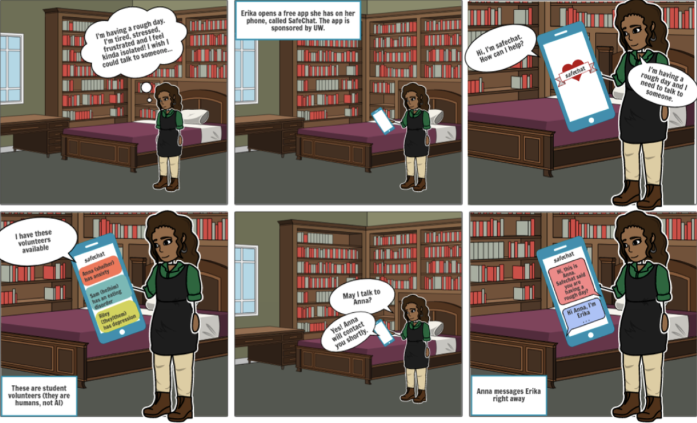
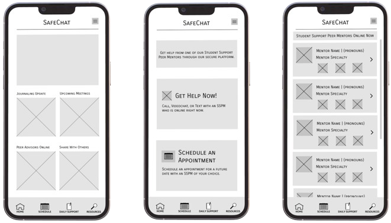
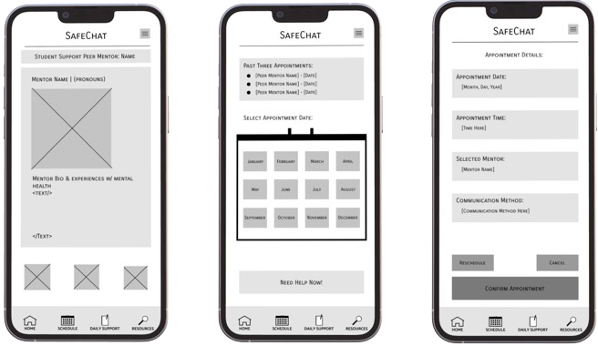
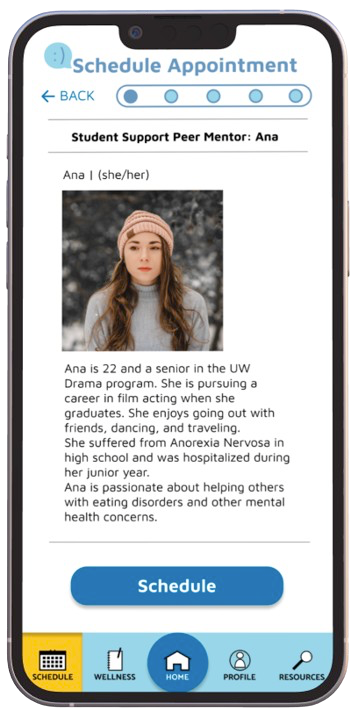
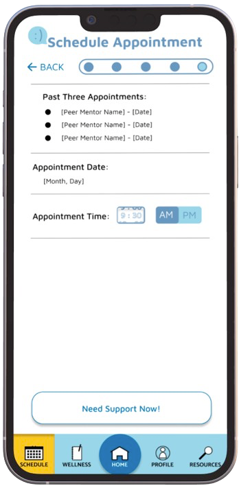
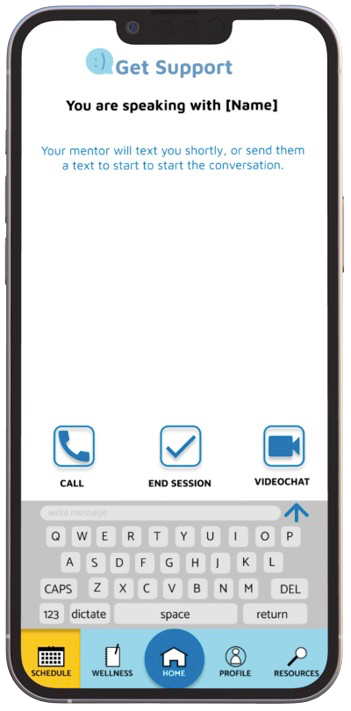
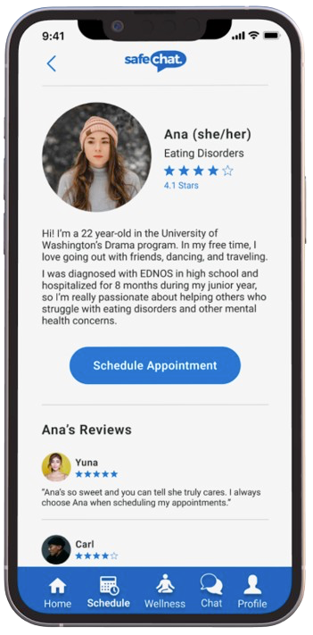
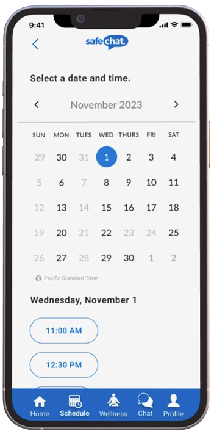
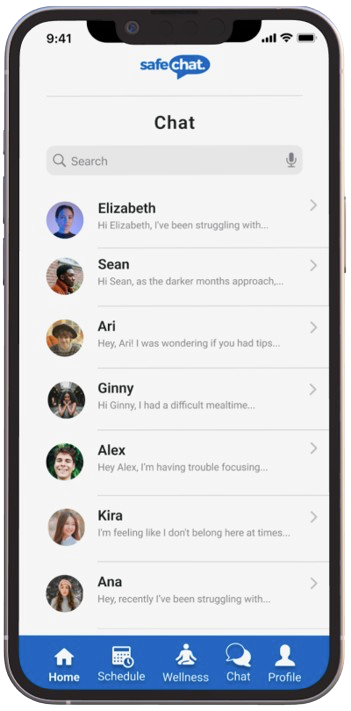

Where support meets convenience, one chat at a time. SafeChat is a mobile app designed to bridge the gap between readily accessible, on-demand mental health support and the unique challenges faced by University of Washington students.
User Research
Our user research focused on understanding the challenges university students face when seeking mental health resources. We conducted semi-structured interviews with students, uncovering key insights:
- Awareness: Many students were unaware of the available mental health resources.
- Accessibility: Barriers such as cost and availability limited access to support.
- Communication Preferences: Students preferred indirect communication channels for discussing mental health.
- Skepticism: There was significant skepticism toward AI-based mental health support.
User Personas
Based on our user research, we developed detailed personas to better understand the needs and behaviors of our target users. These personas guided our design decisions and helped ensure we were addressing real user pain points.
Erica Persona
Mike Persona
User Journey Map
We created user journey maps to visualize the experiences of our personas. These maps helped identify pain points and opportunities for improvement in their interactions with mental health resources.
Mike's User Journey Map
Mike’s journey map highlights the emotional ups and downs experienced during the process of seeking mental health support. Key insights from his journey include:
- Initial confusion about available resources.
- Frustration with accessibility barriers.
- Relief and satisfaction upon finding a suitable support option.
Storyboards
We used storyboards to depict typical scenarios faced by our personas. These visual narratives helped us understand the context of their struggles and the importance of accessible mental health support.
Storyboard created with Storyboard That
Storyboard created with Storyboard That

Storyboard created with images, where I dressed up as Mike
Interface Sketches
Early sketches of the SafeChat interface helped us brainstorm layout ideas and user interactions. These sketches were critical in the initial stages of our design process.

Low-Fidelity Wireframes
We developed low-fidelity wireframes and high-fidelity prototypes to iterate on our design. Each stage of prototyping involved significant user feedback and testing to refine the user experience.
Our initial wireframes focused on basic layout and functionality, allowing us to quickly iterate based on user feedback.
 High-Fidelity Prototype
Our high-fidelity prototypes underwent multiple iterations to enhance visual appeal and user interactions. I later conducted an independent redesign to further refine the UI and improve user experience.
My Team's Original UI
  My Redesigned UI
  Reflection
The design journey for SafeChat was both challenging and rewarding. It underscored the importance of early-stage research, user feedback, and iterative design.
Key learnings include:
- Early Research: Initial user research was critical in understanding the needs and pain points of students.
- User Feedback: Continuous usability testing and feedback helped us refine the design to better meet user expectations.
- Inclusivity and Accessibility: Our project highlighted the need for a broader representation of user groups. Future projects will benefit from more extensive and inclusive research phases.
- Iterative Design: My independent redesign emphasized the value of iterative design, incorporating new insights to enhance both functionality and aesthetics. This process taught me the importance of flexibility and user-centered thinking in creating effective digital solutions.